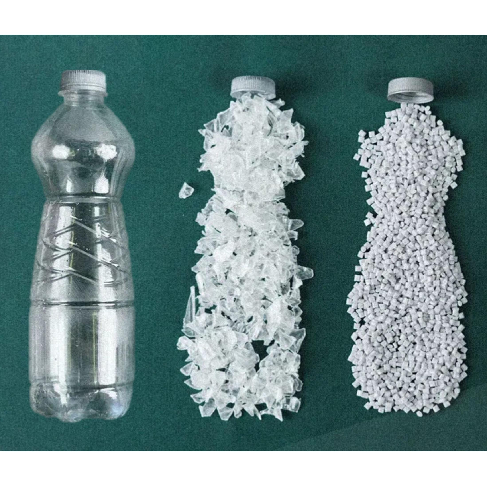

從回收容器到 rPET 再生材料
回收端收集到的 PET 容器，會依品質與後續用途進行分選及處理。常見程序包括去除異物、破碎成片、清洗、乾燥，再依製程需求進一步加工，製成再生 PET 片料或顆粒等材料。這些再生材料可供不同產業作為原料使用。
第五站的重點是「把回收物處理成再生材料」。完成再生後，材料還需要依品質與用途，才能決定下一步如何使用。

1. 分選與去除異物
回收 PET 容器會先依材質、顏色及品質等條件分選，並盡可能去除非 PET 材質、金屬、其他異物及不適合後續處理的物品。前端分選品質會影響後續再生材料的穩定性。
2. 破碎成片
分選後的 PET 容器可經破碎設備切成較小的塑膠片，通常稱為 PET 瓶片(flakes)。破碎前後的設備與作業方式，會依工廠設計及原料狀況而不同。
3. 清洗與分離
瓶片(flakes)會經過清洗，去除飲料殘留、污物、標籤及其他附著物。部分製程也會利用材質密度差異等方法，協助分離不同材質。清洗水與製程廢水也需要妥善處理。
4. 乾燥與再製
清洗後的 PET 瓶片(flakes)會依製程需求進行乾燥，之後可進一步熔融、過濾及造粒，製成 rPET 再生顆粒；也可能以瓶片等形式供後續加工使用。不同產品用途對再生材料的品質要求不同。
5. 品質與用途確認
再生材料須依用途檢查品質，例如顏色、雜質、黏度或其他適用規格。若要用於食品接觸用途，還必須符合相關法規及製程要求；一般回收再生材料並不代表都能直接製成新的飲料瓶。
本階段流程簡圖
♻️
分選與破碎挑選 PET 並切成瓶片💧
清洗與乾燥去除污物及殘留物🟢
再製成材料形成 rPET 瓶片或顆粒以上為常見 PET 機械回收流程的簡化說明。實際流程、設備及材料規格會依回收來源、工廠技術與產品用途而不同。
這一站的重點
回收是把使用後的物品收集起來；再生則是透過處理與加工，將回收物轉變成可供製造使用的再生材料。
小小檢查看看
PET 容器經過破碎後，常見會形成哪一種中間材料？